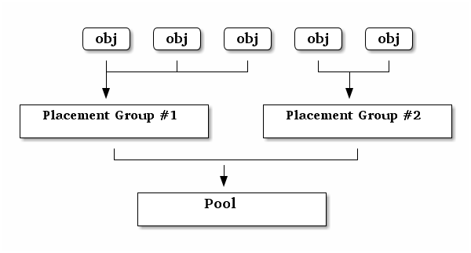
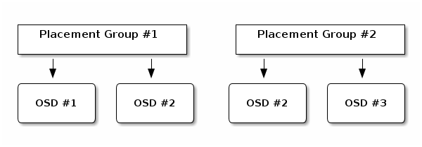

归置组¶
预定义 pg_num¶
用此命令创建存储池时：
ceph osd pool create {pool-name} pg_num
确定 pg_num 取值是强制性的，因为不能自动计算。下面是几个常用的值：
- 少于 5 个 OSD 时可把 pg_num 设置为 128
- OSD 数量在 5 到 10 个时，可把 pg_num 设置为 512
- OSD 数量在 10 到 50 个时，可把 pg_num 设置为 4096
- OSD 数量大于 50 时，你得理解权衡方法、以及如何自己计算 pg_num 取值
- 自己计算 pg_num 取值时可借助 pgcalc 工具
随着 OSD 数量的增加，正确的 pg_num 取值变得更加重要，因为它显著地影响着集群的行为、以及出错时的数据持久性（即灾难性事件导致数据丢失的概率）。
归置组是如何使用的？¶
存储池内的归置组（ PG ）把对象汇聚在一起，因为跟踪每一个对象的位置及其元数据需要大量计算——即一个拥有数百万对象的系统，不可能在对象这一级追踪位置。

Ceph 客户端会计算某一对象应该位于哪个归置组里，它是这样实现的，先给对象 ID 做哈希操作，然后再根据指定存储池里的 PG 数量、存储池 ID 做一个运算。详情见 PG 映射到 OSD 。
The object’s contents within a placement group are stored in a set of OSDs. For instance, in a replicated pool of size two, each placement group will store objects on two OSDs, as shown below.

Should OSD #2 fail, another will be assigned to Placement Group #1 and will be filled with copies of all objects in OSD #1. If the pool size is changed from two to three, an additional OSD will be assigned to the placement group and will receive copies of all objects in the placement group.
Placement groups do not own the OSD, they share it with other placement groups from the same pool or even other pools. If OSD #2 fails, the Placement Group #2 will also have to restore copies of objects, using OSD #3.
When the number of placement groups increases, the new placement groups will be assigned OSDs. The result of the CRUSH function will also change and some objects from the former placement groups will be copied over to the new Placement Groups and removed from the old ones.
Placement Groups Tradeoffs¶
Data durability and even distribution among all OSDs call for more placement groups but their number should be reduced to the minimum to save CPU and memory.
Data durability¶
After an OSD fails, the risk of data loss increases until the data it contained is fully recovered. Let’s imagine a scenario that causes permanent data loss in a single placement group:
- The OSD fails and all copies of the object it contains are lost. For all objects within the placement group the number of replica suddently drops from three to two.
- Ceph starts recovery for this placement group by chosing a new OSD to re-create the third copy of all objects.
- Another OSD, within the same placement group, fails before the new OSD is fully populated with the third copy. Some objects will then only have one surviving copies.
- Ceph picks yet another OSD and keeps copying objects to restore the desired number of copies.
- A third OSD, within the same placement group, fails before recovery is complete. If this OSD contained the only remaining copy of an object, it is permanently lost.
In a cluster containing 10 OSDs with 512 placement groups in a three replica pool, CRUSH will give each placement groups three OSDs. In the end, each OSDs will end up hosting (512 * 3) / 10 = ~150 Placement Groups. When the first OSD fails, the above scenario will therefore start recovery for all 150 placement groups at the same time.
The 150 placement groups being recovered are likely to be homogeneously spread over the 9 remaining OSDs. Each remaining OSD is therefore likely to send copies of objects to all others and also receive some new objects to be stored because they became part of a new placement group.
The amount of time it takes for this recovery to complete entirely depends on the architecture of the Ceph cluster. Let say each OSD is hosted by a 1TB SSD on a single machine and all of them are connected to a 10Gb/s switch and the recovery for a single OSD completes within M minutes. If there are two OSDs per machine using spinners with no SSD journal and a 1Gb/s switch, it will at least be an order of magnitude slower.
In a cluster of this size, the number of placement groups has almost no influence on data durability. It could be 128 or 8192 and the recovery would not be slower or faster.
However, growing the same Ceph cluster to 20 OSDs instead of 10 OSDs is likely to speed up recovery and therefore improve data durability significantly. Each OSD now participates in only ~75 placement groups instead of ~150 when there were only 10 OSDs and it will still require all 19 remaining OSDs to perform the same amount of object copies in order to recover. But where 10 OSDs had to copy approximately 100GB each, they now have to copy 50GB each instead. If the network was the bottleneck, recovery will happen twice as fast. In other words, recovery goes faster when the number of OSDs increases.
If this cluster grows to 40 OSDs, each of them will only host ~35 placement groups. If an OSD dies, recovery will keep going faster unless it is blocked by another bottleneck. However, if this cluster grows to 200 OSDs, each of them will only host ~7 placement groups. If an OSD dies, recovery will happen between at most of ~21 (7 * 3) OSDs in these placement groups: recovery will take longer than when there were 40 OSDs, meaning the number of placement groups should be increased.
不论恢复时间有多短，在此期间都可能有第二个 OSD 失败。在前述的有 10 个 OSD 的集群中，不管哪个失败了，都有大约 17 个归置组（即需恢复的大约 150 / 9 个归置组）将只有一份可用副本；并且假设剩余的 8 个 OSD 中任意一个失败，两个归置组中最后的对象都有可能丢失（即正在恢复的、大约 17 / 8 个仅剩一个副本的归置组）。
当集群大小变为 20 个 OSD 时， 3 个 OSD 丢失导致的归置组损坏会降低。第二个 OSD 丢失会降级大约 4 个（即需恢复的归置组约为 75 / 19 ）而不是约 17 个归置组，并且只有当第三个 OSD 恰好是包含可用副本的四分之一个 OSD 时、才会丢失数据。换句话说，假设在恢复期间丢失一个 OSD 的概率是 0.0001% ，那么，在包含 10 个 OSD 的集群中丢失 OSD 的概率是 17 * 10 * 0.0001% ，而在 20 个 OSD 的集群中将是 4 * 20 * 0.0001% 。
In a nutshell, more OSDs mean faster recovery and a lower risk of cascading failures leading to the permanent loss of a Placement Group. Having 512 or 4096 Placement Groups is roughly equivalent in a cluster with less than 50 OSDs as far as data durability is concerned.
Note: It may take a long time for a new OSD added to the cluster to be populated with placement groups that were assigned to it. However there is no degradation of any object and it has no impact on the durability of the data contained in the Cluster.
Object distribution within a pool¶
Ideally objects are evenly distributed in each placement group. Since CRUSH computes the placement group for each object, but does not actually know how much data is stored in each OSD within this placement group, the ratio between the number of placement groups and the number of OSDs may influence the distribution of the data significantly.
For instance, if there was single a placement group for ten OSDs in a three replica pool, only three OSD would be used because CRUSH would have no other choice. When more placement groups are available, objects are more likely to be evenly spread among them. CRUSH also makes every effort to evenly spread OSDs among all existing Placement Groups.
As long as there are one or two orders of magnitude more Placement Groups than OSDs, the distribution should be even. For instance, 300 placement groups for 3 OSDs, 1000 placement groups for 10 OSDs etc.
Uneven data distribution can be caused by factors other than the ratio between OSDs and placement groups. Since CRUSH does not take into account the size of the objects, a few very large objects may create an imbalance. Let say one million 4K objects totaling 4GB are evenly spread among 1000 placement groups on 10 OSDs. They will use 4GB / 10 = 400MB on each OSD. If one 400MB object is added to the pool, the three OSDs supporting the placement group in which the object has been placed will be filled with 400MB + 400MB = 800MB while the seven others will remain occupied with only 400MB.
确定归置组数量¶
If you have more than 50 OSDs, we recommend approximately 50-100 placement groups per OSD to balance out resource usage, data durability and distribution. If you have less than 50 OSDs, chosing among the preselection above is best. For a single pool of objects, you can use the following formula to get a baseline:
(OSDs * 100)
Total PGs = ------------
pool size
Where pool size is either the number of replicas for replicated pools or the K+M sum for erasure coded pools (as returned by ceph osd erasure-code-profile get).
You should then check if the result makes sense with the way you designed your Ceph cluster to maximize data durability, object distribution and minimize resource usage.
其结果汇总后应该接近 2 的幂。汇总并非强制的，如果你想确保所有归置组内的对象数大致相等，最好检查下。
比如，一个配置了 200 个 OSD 且副本数为 3 的集群，你可以这样估算归置组数量：
(200 * 100)
----------- = 6667. Nearest power of 2: 8192
3
当用了多个数据存储池来存储数据时，你得确保均衡每个存储池的归置组数量、且归置组数量分摊到每个 OSD ，这样才能达到较合理的归置组总量，并因此使得每个 OSD 无需耗费过多系统资源或拖慢连接进程就能实现较小变迁。
For instance a cluster of 10 pools each with 512 placement groups on ten OSDs is a total of 5,120 placement groups spread over ten OSDs, that is 512 placement groups per OSD. That does not use too many resources. However, if 1,000 pools were created with 512 placement groups each, the OSDs will handle ~50,000 placement groups each and it would require significantly more resources and time for peering.
设置归置组数量¶
要设置某存储池的归置组数量，你必须在创建它时就指定好，详情见创建存储池。一存储池的归置组数量设置好之后，还可以增加（但不可以减少），下列命令可增加归置组数量：
ceph osd pool set {pool-name} pg_num {pg_num}
你增加归置组数量后、还必须增加用于归置的归置组（ pgp_num ）数量，这样才会开始重均衡。 pgp_num 数值才是 CRUSH 算法采用的用于归置的归置组数量。虽然 pg_num 的增加引起了归置组的分割，但是只有当用于归置的归置组（即 pgp_num ）增加以后，数据才会被迁移到新归置组里。 pgp_num 的数值应等于 pg_num 。可用下列命令增加用于归置的归置组数量：
ceph osd pool set {pool-name} pgp_num {pgp_num}
获取卡住的归置组统计信息¶
要获取所有卡在某状态的归置组统计信息，执行命令：
ceph pg dump_stuck inactive|unclean|stale|undersized|degraded [--format <format>] [-t|--threshold <seconds>]
Inactive （不活跃）归置组不能处理读写，因为它们在等待一个有最新数据的 OSD 复活且进入集群。
Unclean （不干净）归置组含有复制数未达到期望数量的对象，它们应该在恢复中。
Stale （不新鲜）归置组处于未知状态：存储它们的 OSD 有段时间没向监视器报告了（由 mon_osd_report_timeout 配置）。
可用格式有 plain （默认）和 json 。阀值定义的是，归置组被认为卡住前等待的最小时间（默认 300 秒）。
获取一归置组运行图¶
要获取一个具体归置组的归置组图，执行命令：
ceph pg map {pg-id}
例如：
ceph pg map 1.6c
Ceph 将返回归置组图、归置组、和 OSD 状态：
osdmap e13 pg 1.6c (1.6c) -> up [1,0] acting [1,0]
洗刷归置组¶
要洗刷一个归置组，执行命令：
ceph pg scrub {pg-id}
Ceph 检查原始的和任何复制节点，生成归置组里所有对象的目录，然后再对比，确保没有对象丢失或不匹配，并且它们的内容一致。
恢复丢失的¶
如果集群丢了一或多个对象，而且必须放弃搜索这些数据，你就要把未找到的对象标记为丢失（ lost ）。
如果所有可能的位置都查询过了，而仍找不到这些对象，你也许得放弃它们了。这可能是罕见的失败组合导致的，集群在写入完成前，未能得知写入是否已执行。
当前只支持 revert 选项，它使得回滚到对象的前一个版本（如果它是新对象）或完全忽略它。要把 unfound 对象标记为 lost ，执行命令：
ceph pg {pg-id} mark_unfound_lost revert|delete
Important
要谨慎使用，它可能迷惑那些期望对象存在的应用程序。